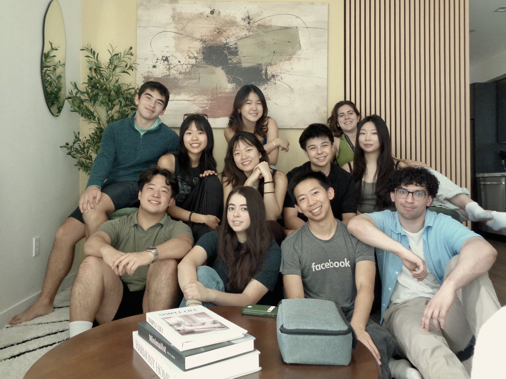
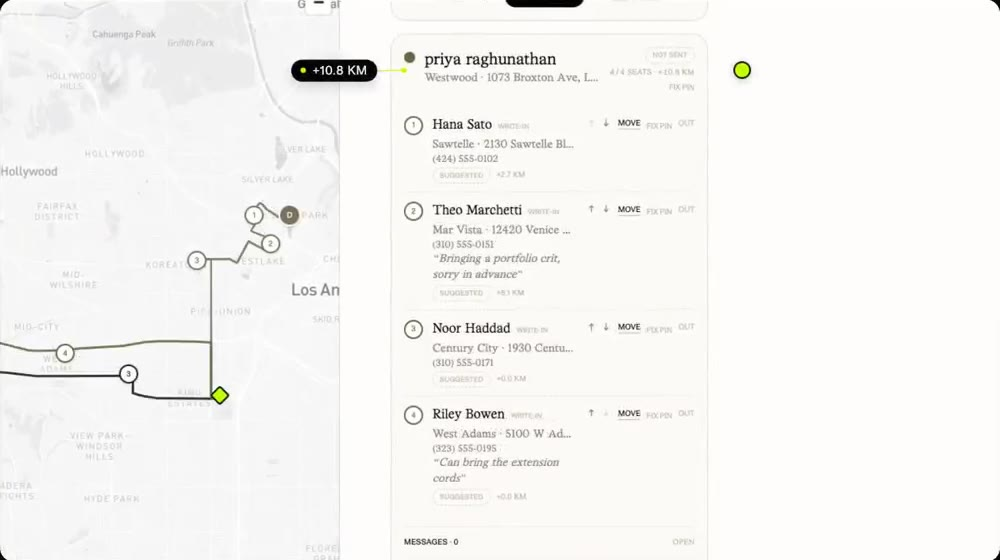

聚 Community
USC and UCLA
Sundays in LA
A creative coworking session for students at USC and UCLA. People bring whatever they're working on and work on it next to each other. I'm one of the hosts.
The 日 in 时, the character in my name that means time, is a picture of the sun. For Sundays, I let it be one. Click it to watch again.
How a Sunday runs
We work in rounds on a shared timer: 45 minutes of deep work, then 10 minutes to talk. Each round is a small day. The sun crosses the sky while everyone works, then slips back under the horizon while we talk, and rises again for the next round.
Round 1. 45 minutes of deep work
45:00
Press start to begin the round.
Preview runs a minute every second, so a whole round takes under a minute.
Scenes


The portal

I designed and built the membership portal for Sundays with Claude Code: one-click RSVP, a check-in list for hosts, a "who did you meet?" page after each Sunday, and carpools that route riders to drivers.
[More to come: how I started hosting, what people make, the people.]